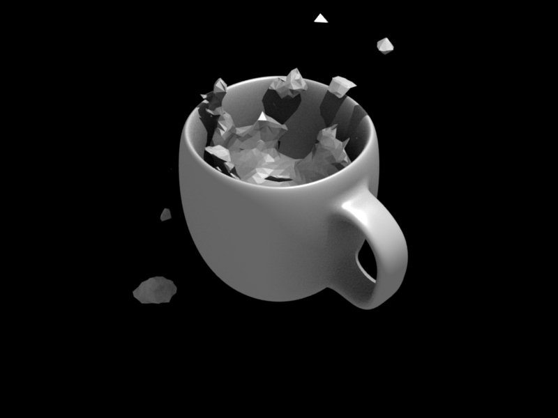

Fluid Domain¶
Reference
| Panel: | |
|---|---|
| Type: | Domain |
The bounding box of the object serves as the boundary of the simulation. All fluid objects must be in the domain. Fluid objects outside the domain will not bake. No tiny droplets can move outside this domain; it’s as if the fluid is contained within the 3D space by invisible force fields. There can be only a single fluid simulation domain object in the scene.
The shape of the object does not matter because it will always be treated like a box (The lengths of the bounding box sides can be different). So, usually there will not be any reason to use another shape than a box. If you need obstacles or other boundaries than a box to interfere with the fluid flow, you need to insert additional obstacle objects inside the domain boundary.
This object will be replaced by the fluid during the simulation.
Tip
Baking is done on the Domain object
When you calculate the fluid simulation, you bake the simulation on the domain object. For this reason all the baking options are visible only when selecting the Domain Object.
For baking options, see Baking.
Settings¶
Reference
| Panel: | |
|---|---|
| Type: | Domain |
- Simulation Threads:
- Override number of threads for the simulation, 0 is automatic.
- Resolution
- Render resolution
The granularity at which the actual fluid simulation is performed. This is probably the most important setting for the simulation as it determines the amount of details in the fluid, the memory and disk usage as well as computational time.
10cm mug at Resolution 70.
10cm mug at Resolution 200.
Note
The amount of required memory quickly increases: a resolution of 32 requires ca. 4MB, 64 requires ca. 30MB, while 128 already needs more than 230MB. Make sure to set the resolution low enough, depending on how much memory you have, to prevent Blender from crashing or freezing. Remember also that many operating systems limit the amount of memory that can be allocated by a single process, such as Blender, even if the machine contains much more than this. Find out what limitations apply to your machine.
Note
Resolution and Real-size of the Domain
Be sure to set the resolution appropriate to the real-world size of the domain (see the Real World Size in the Fluid World). If the domain is not cubic, the resolution will be taken for the longest side. The resolutions along the other sides will be reduced according to their lengths (therefore, a non-cubic domain will need less memory than a cubic one, resolutions being the same).
- Preview resolution
- This is the resolution at which the preview surface meshes will be generated. So it does not influence the actual simulation. Even if “there is nothing to see” in the preview, there might be a thin fluid surface that cannot be resolved in the preview.
- Display
How to display a baked simulation in the 3D View (menu Viewport Display) and for rendering (menu Render Display):
- Geometry
- Use the original geometry (before simulation).
- Preview
- Use the preview mesh.
- Final
- Use the final high definition mesh.
When no baked data is found, the original mesh will be displayed by default.
After you have baked a domain, it is displayed (usually) in the Blender window as the preview mesh. To see the size and scope of the original domain box, select Geometry in the left selector.
- Time
- Start
It is the simulation start time (in seconds).
This option makes the simulation computation in Blender start later in the simulation. The domain deformations and fluid flow prior to the start time are not saved.
For example, if you wanted the fluid to appear to already have been flowing for 4 seconds before the actual first frame of data, you would enter 4.0 here.
- End
- It is the simulation ending time (in seconds).
Tip
Start and end times have nothing to do with how many frames are baked
If you set Start time to 3.0, and End time to 4.0, you will simulate 1 second of fluid motion. That one second of fluid motion will be spread across however-many frames are set in .
This means, for example, that if you have Blender set to make 250 frames at 25 fps, the fluid will look like it had already been flowing for 3 seconds at the start of the simulation, but will play in slow motion (one-tenth normal speed), since the 1 second fluid simulation plays out over the course of 10 video seconds. To correct this, change the end time to 13.0 (3.0 + 10.0) to match the 250 frames at 25 fps. Now, the simulation will be real-time, since you set 10 seconds of fluid motion to simulate over 10 seconds of animation. Having these controls in effect gives you a “speed control” over the simulation.
- Speed
- Fluid motion rate. The speed option can be animated to slow down or speed up time.
- Generate Speed Vectors
- If this button is clicked, no speed vectors will be exported. So by default, speed vectors are generated and stored on disk. They can be used to compute image-based motion blur with the compositing nodes.
- Reverse Frames
- The simulation is calculated backward.
- Offset
- Time offset when reading backed cache.
Bake¶
Reference
| Panel: | |
|---|---|
| Type: | Domain |
Fluid World¶
Reference
| Type: | Domain |
|---|---|
| Panel: |
- Scene Size Meters
- Size of the domain object in the real world in meters. If you want to create a mug of coffee, this might be 10 cm (0.1 meters), while a swimming pool might be 10m. The size set here is for the longest side of the domain bounding box.
- Optimization
- How many adaptive grid levels to be used during simulation. Setting this to -1 will perform automatic selection.
- Compressibility
- If you have problems with large standing fluid regions at a high resolution, it might help to reduce this number (note that this will increase computation times).
Fluid Viscosity¶
Reference
| Type: | Domain |
|---|---|
| Panel: |
- Viscosity Presets
The “thickness” of the fluid and actually the force needed to move an object of a certain surface area through it at a certain speed.
For manual entry, please note that the normal real-world viscosity (the so-called dynamic viscosity) is measured in Pascal-seconds (Pa.s), or in Poise units (P, equal to 0.1 Pa.s, pronounced pwaz, from the Frenchman Jean-Louis Poiseuille, who discovered the laws on “the laminar flow of viscous fluids”), and commonly centiPoise units (cP, equal to 0.001 Pa.s, sentipwaz). Blender, on the other hand, uses the kinematic viscosity (which is dynamic viscosity in Pa.s, divided by the density in kg.m-3, unit m2.s-1). The table below gives some examples of fluids together with their dynamic and kinematic viscosities.
Blender viscosity unit conversion.¶ Fluid Dynamic viscosity (in cP) Kinematic viscosity (Blender, in m2.s-1) Water (20° C) 1.002×100 (1.002) 1.002×10-6 (0.000001002) Oil SAE 50 5.0×102 (500) 5.0×10-5 (0.00005) Honey (20° C) 1.0×104 (10,000) 2.0×10-3 (0.002) Chocolate Syrup 3.0×104 (30,000) 3.0×10-3 (0.003) Ketchup 1.0×105 (100,000) 1.0×10-1 (0.1) Melting Glass 1.0×1015 1.0×100 (1.0) Manual entries are specified by a floating point number and an exponent. These floating point and exponent entry fields (scientific notation) simplify entering very small or large numbers. The viscosity of water at room temperature is 1.002 cP, or 0.001002 Pa.s; the density of water is about 1000 kg.m-3, which gives a kinematic viscosity of 0.000001002 m2.s-1 – so the entry would be 1.002 times 10 to the minus six (1.002×10-6 in scientific notation). Hot Glass and melting iron are fluids, but very thick; you should enter something like 1.0×100 (= 1.0) as its kinematic viscosity (indicating a value of 1.0×106cP).
Note that the simulator is not suitable for non-fluids, such as materials that do not “flow”. Simply setting the viscosity to very large values will not result in rigid body behavior, but might cause instabilities.
Note
Viscosity varies
The default values in Blender are considered typical for those types of fluids and “look right” when animated. However, actual viscosity of some fluids, especially sugar-laden fluids like chocolate syrup and honey, depend highly on temperature and concentration. Oil viscosity varies by SAE rating. Glass at room temperature is basically a solid, but glass at 1500 degrees Celsius flows (nearly) like water.
Fluid Boundary¶
Reference
| Type: | Domain |
|---|---|
| Panel: |
This box has all the slip and surface options.
- Type
The stickiness of the surface of the obstacle, to determine the “tacky surface (Surface Adhesion).” In the real world, and the tackiness and fluid, the granularity of the object surface, tack, determined by the elasticity.
- No Slip
- Fluid will stick to snugly (speed 0).
- Free Slip
- Fluid will move on the object (0 normal direction of speed).
- Partial Slip
- It is a two intermediate. It is almost No slip, 1 in the Free exactly the same in 0.
- Amount
- Amount of mixing between no and free slip. 0 is no slip, 1 is free slip.
- Surface Smoothing
- Amount of smoothing to be applied to the fluid surface. 1.0 is standard, 0 is off, while larger values increase the amount of smoothing.
- Subdivisions
- Allows the creation of high-res surface meshes directly during the simulation (as opposed to doing it afterwards like a Subdivision Surface Modifier). A value of 1 means no subdivision, and each increase results in one further subdivision of each fluid voxel. The resulting meshes thus quickly become large, and can require large amounts of disk space. Be careful in combination with large smoothing values – this can lead to long computation times due to the surface mesh generation.
- Remove Air Bubbles
- Enable the possibility to remove the “air bubble” around submerged collision object.
Fluid Particles¶
Reference
| Type: | Domain |
|---|---|
| Panel: |
Here you can add particles to the fluid simulated, to enhance the visual effect.
- Tracer Particles
- Number of tracer particles to be put into the fluid at the beginning of the simulation. To display them create another object with the Particle fluid type, explained below, that uses the same bake directory as the domain.
- Generate Particles
- Controls the amount of fluid particles to create (0=off, 1=normal, >1=more). To use it, you have to have a surface subdivision value of at least 2.
An example of Particles effects.